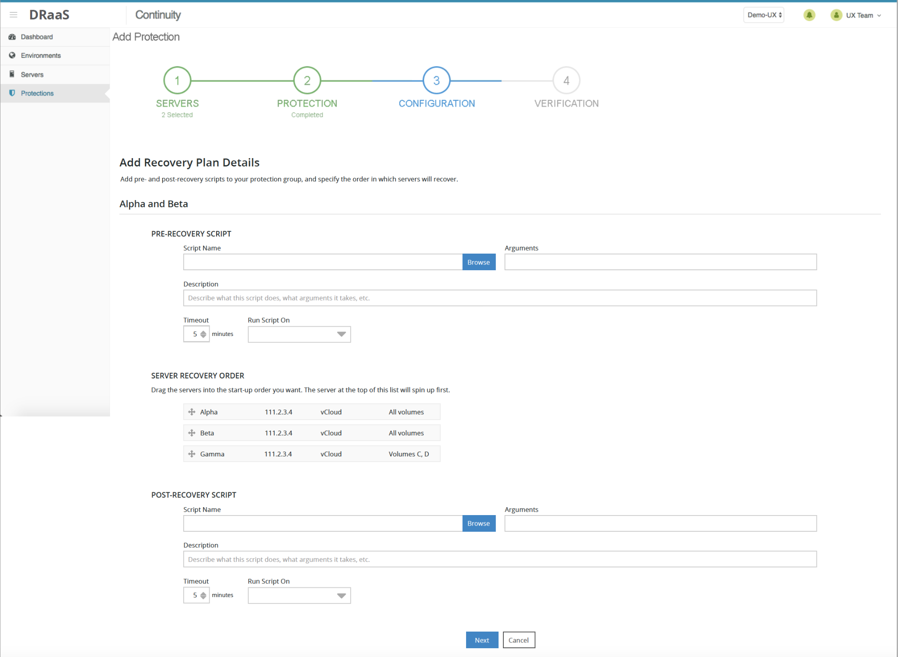
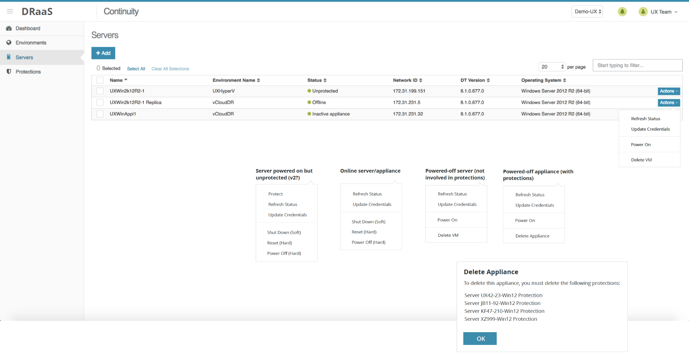
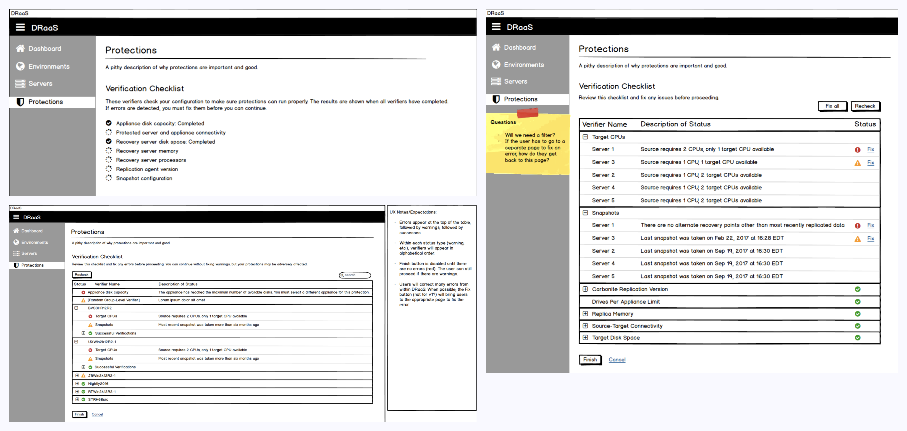
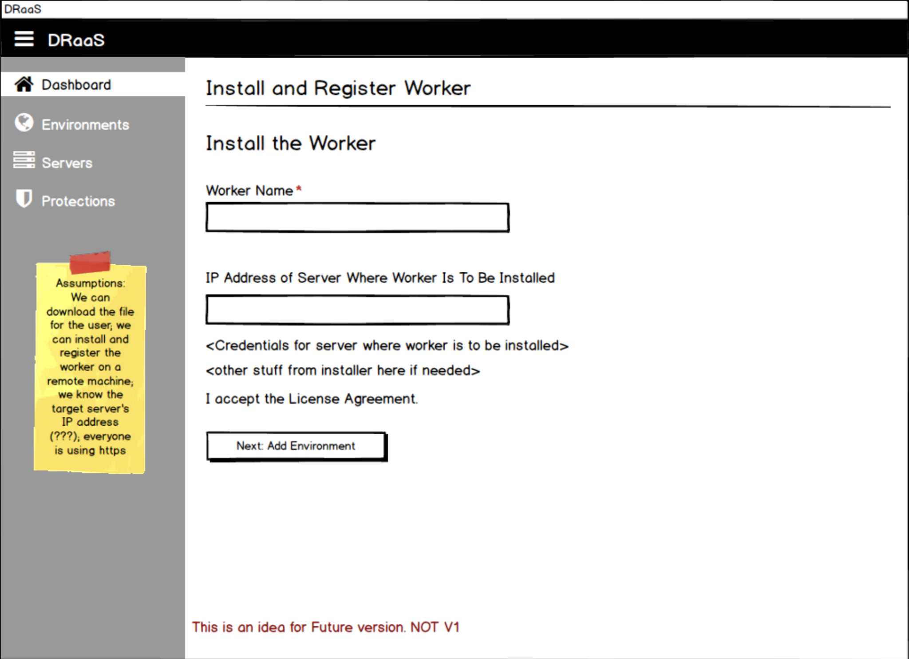

Disaster Recovery as a Service
Tools to help IT professionals recover from disasters

The project
Helping IT professionals keep up-to-the-minute replicas of their data and servers so they can recover essential operations quickly in the event of a disaster.
The problem
When the UX team joined the project, most of the application had been developed, but several components were missing, including an onboarding flow, virtual machine (VM) controls, protection job verifiers, and recovery orchestrations. In addition, the application had usability issues that needed to be addressed.

My role
As the junior designer on this project, I worked closely with a lead designer and the sole developer.
The solution
- I started by conducting a heuristic analysis of the application. The findings included a general lack of information throughout the UI, unusual interactions that might confuse users, and odd layout choices. The developer was able to implement many of my recommendations right away, rapidly improving the usability of the product.
- Next, the UX lead and I built an onboarding flow in Balsamiq. Our goals were to ensure the user always knows what to do next, to minimize the number of required fields, and to provide smart defaults when possible.
- I was also responsible for designing interactions for virtual machine (VM) controls and protection job verifiers. Neither of these features had been implemented in the application. For the VM controls feature, I researched the commands that are available in VMware, and worked with the product manager to ensure that the subset of VMware commands we made available in our application was adequate, coherent, and comprehensible. For the protection job verifiers workflow, I created a design that provided the minimum necessary information on the screen, while allowing users to view additional information if desired.
- Finally, I synthesized a set of existing designs and concepts to create a screen for recovery orchestration.

Process
- Heuristic review of existing product to identify usability issues and gaps
- Designing an onboarding flow
- Researching and designing interactions for virtual machine controls and protection job verifiers
- Synthesis of existing designs and concepts to create a screen for recovery orchestration
